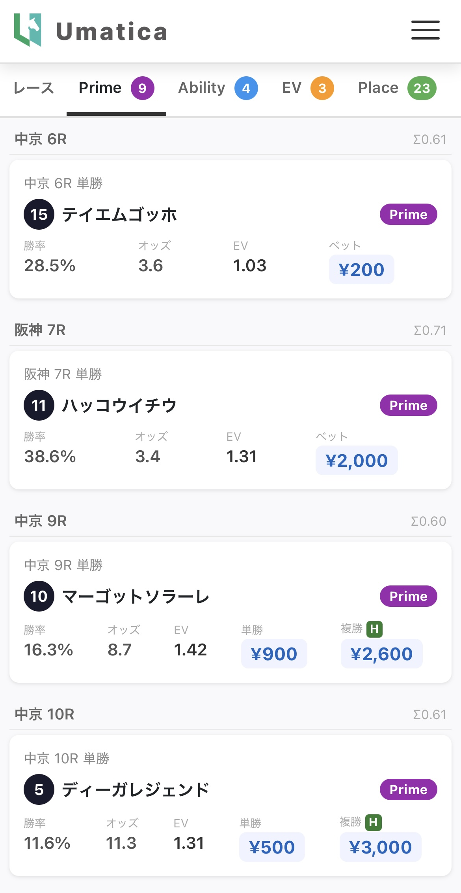
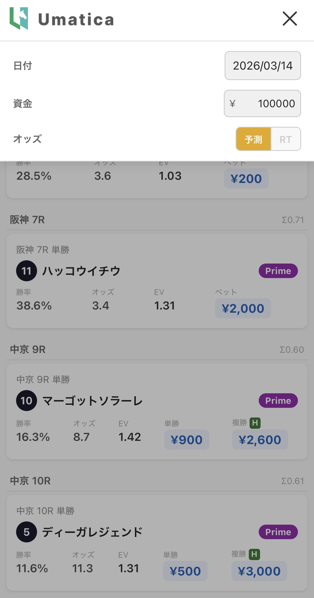

Umatica ユーザーズマニュアル
データに基づいた競馬の買い目推奨を、毎週末リアルタイムで配信するWebアプリです
はじめての方へ：3ステップで始める
1
専用リンクでログイン
招待時にお伝えした
リンクからアクセス
→
2
Primeタブを確認
紫バッジの馬が
Umaticaの最高推奨です
→
3
ベット額を参考に購入
カードに表示された金額を
目安に馬券を購入
アクセス方法
- 専用リンク: 招待時にお伝えしたリンクからアクセス
- 初回認証: ユーザー名・パスワードを入力（招待時にお伝えします）
- スマホ推奨: ホーム画面に追加すると、アプリのように使えます（PWA対応）
画面構成
アプリは大きく3つのエリアで構成されています。


ヘッダー
ロゴの右にあるメニュー（≡）をタップすると、以下の設定を変更できます。
| 項目 | 説明 |
|---|
| 日付 | 表示する開催日を選択（自動で当日が設定されます） |
| 資金（¥） | あなたの資金額を入力（初期値: ¥100,000） |
| オッズ切替 | 予測オッズとリアルタイムオッズの切替 |
資金額はブラウザに保存されるので、毎回入力する必要はありません。
タブバー
5つのタブで情報を切り替えます。各タブ名の横の数字は推奨件数です。
| タブ | 内容 |
|---|
| レース | 全レース一覧（開催場別）で、各レースの出走馬を確認できます |
| Prime | 最も信頼度の高い推奨馬（能力1位 かつ 期待値1位の同一馬） |
| Ability | 能力モデルが最も高く評価し、期待値もプラスの馬 |
| EV | 期待値が最も高く、独自のフィルタ条件を満たした馬 |
| Place | 複勝（3着以内）で期待値が高い馬 |
4つの推奨
Ability推奨（能力重視）
勝率1位 × EV > 1.0
＋
両方に該当
↓
EV推奨（期待値重視）
期待値1位 × 独自フィルタ
★ Prime推奨（最重要）
能力でも期待値でも1位 — Umaticaの最高推奨 — 2025年BT: 単勝回収率 140%（229件）
Place推奨（複勝）
単独Place ＋ ヘッジ複勝（H）
Prime推奨 — 最重要
Ability と EV の両方に該当する馬。能力でも期待値でも1位という、Umaticaが最も自信を持つ推奨です。
- 2025年バックテスト: 229件、単勝的中率 27.9%、単勝回収率 140%
- 件数は少ないが、出現した場合の信頼度が最も高い
Ability推奨 — 能力重視
数理モデルが勝率1位と予測した馬のうち、期待値（EV）が 1.0 を超えるもの。「最も強い馬」を軸にした堅実な推奨です。
- 2025年バックテスト: 1,224件、単勝的中率 31.0%、単勝回収率 109%
EV推奨 — 期待値重視
期待値が最も高い馬のうち、独自のフィルタ条件を通過したもの。オッズに対して実力が過小評価されている馬を狙う推奨です。
- 2025年バックテスト: 941件、単勝的中率 13.6%、単勝回収率 193%
Place推奨 — 複勝
複勝で高い期待値が見込める馬。独自のフィルタ条件を通過したものを推奨します。2種類あります。
- 単独Place: 複勝単体で期待値が高い馬
- ヘッジ複勝（H）: 単勝推奨の馬に対し、リスク分散として複勝も併せて購入する手法です。カードに
H マークで表示されます
2025年バックテスト実績
| 推奨 | 件数 | 単勝的中率 | 複勝的中率 | 単勝ROI | 複勝ROI |
|---|
| Ability | 1,224 | 31.0% | 63.5% | 109% | 109% |
| EV | 941 | 13.6% | 38.8% | 193% | 133% |
| Prime | 229 | 27.9% | 60.3% | 140% | 117% |
| Place | 293 | — | 27.3% | — | 257% |
※ 予測オッズベースの数値です。実際のRTオッズでは結果が異なる場合があります。
ベットカードの読み方
各推奨馬は「ベットカード」として表示されます。
2 タイキインドラ
- 勝率
- 17.3%
- オッズ
- 6.6
- EV
- 1.14
- ベット
- ¥400
| 項目 | 説明 |
|---|
| 勝率 | モデルが予測した勝率（Placeタブでは複勝率）で、モデルが算出した値をそのまま表示しているため全馬の合計が100%にならない場合があります |
| オッズ | 単勝オッズ（Placeタブでは複勝オッズ下限）で、↑↓は直近のRTオッズからの変動方向 |
| EV（期待値） | 勝率 × オッズで、1.0を超えると理論上プラス（高いほど狙い目） |
| ベット | 数理モデルに基づき、資金額から最適額を自動算出した推奨賭け金 |
レースタブの使い方
レースタブでは全レースがアコーディオン形式で一覧表示されます。
レース一覧タップで展開
→
推奨馬をタップ推奨タブへジャンプ
→
カードをタップレースタブへ戻る
- 青い丸（●） があるレースには推奨馬がいます
- 推奨馬にはバッジが表示されます
- 推奨馬をタップすると、対応する推奨タブへジャンプします
- 推奨タブのベットカードをタップすると、レースタブへ戻り該当レースが展開されます
- スマホでは開催場タブ（例: 中山 / 阪神 / 中京）で切り替えます
- PCでは3カラムで全会場を同時に閲覧できます
オッズモードについて
予測オッズ（黄色ボタン）
前日情報に基づく予測オッズ。金曜夜〜土曜朝の段階で確認できます。
RTオッズ（緑色ボタン）
当日のリアルタイムオッズ。土日の 5:00〜17:00 に自動取得されます。
- RT取得が始まると自動的にRTモードに切り替わります
- 手動で予測⇔RTを切り替えることも可能です
- RTボタンに最終更新時刻が表示されます（例:
RT 12:30）
発走5分前ロック
各レースの発走5分前に、その時点の推奨馬がロック（固定）され、以降のオッズ変動でEVが1.0を下回っても推奨から外れません（ただしオッズ・EV表示は最新値で更新され続けます）
推奨される使い方
基本フロー
土曜朝アプリを開く
予測モードで確認
→
レース前RTオッズに切替
最新で再確認
→
Primeを最優先件数は少ないが
信頼度が高い
→
購入表示額を参考に
馬券を購入
※ 賭け金は資金額に基づいて算出されます。資金額を正しく設定してください。
知っておいてほしいこと
- 推奨だからといって必ず的中するわけではありません。長期的な回収率向上を目指すものです。
- Primeの的中率は約28%で、4回に3回は不的中ですが、的中時のリターンで長期的にプラスを目指す設計です。
- 重要なのは1回の的中で複数回の不的中をカバーできる回収率です。
- 資金管理が重要で、表示されたベット額を守ることを推奨します。
- 「推奨が0件」の日もあります。賭けないことも重要な判断です。
用語集
| 用語 | 説明 |
|---|
| EV（期待値） | Expected Value（勝率 × オッズ）で、1.0以上なら理論上プラス |
| ROI（回収率） | 投資に対するリターンの割合で、100%が損益分岐点 |
| ヘッジ複勝（H） | 単勝推奨馬の複勝も購入する手法で、いわゆる「単複」（カードの H マークが目印） |
| ベット額 | 資金額に対する最適な賭け金で、数理モデルにより自動算出 |
よくある質問
Q: データはいつ更新されますか？
毎週金曜夜に予測データがデプロイされ、土日のRTオッズは5:00〜17:00に自動更新されます
Q: 資金額は何を入力すればいいですか？
競馬に使える予算の総額を入力してください（ベット額はこの金額を基に最適化されます）
Q: 推奨が少ない日がありますが？
条件を満たす馬がいない場合は推奨しません（「賭けない」も判断のうちです）
Q: 同じレースでAbilityとEVに別々の馬が出ていますが？
AbilityとEVはそれぞれ独立した基準で選定しているため、同じレースで異なる馬が推奨されることがあります（どちらを優先するかはご自身のスタイルに合わせてください）
Q: PCとスマホで表示が違いますが？
レスポンシブ対応しており、PCは3カラム、スマホは開催場タブ切替です（機能は同じです）
Q: 勝率の合計が100%にならないのですが？
モデルが算出した値をそのまま表示しているためです（EV = 勝率 × オッズ の計算式でご自身でも検算できます）
フィードバック
使っていて気づいたこと、改善提案、不具合報告は大歓迎です。
テスターの皆さまの声が、Umaticaの改善に直結します。些細なことでもお気軽にお寄せください。